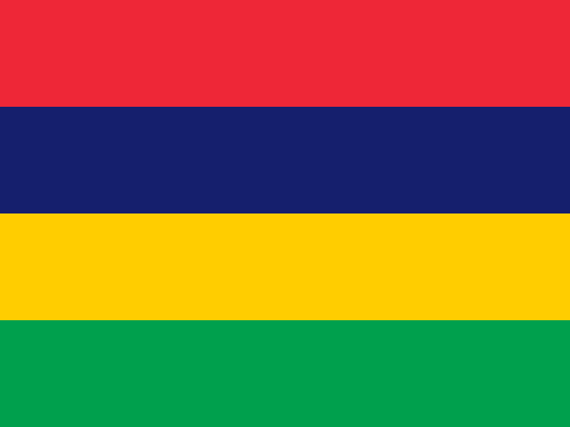
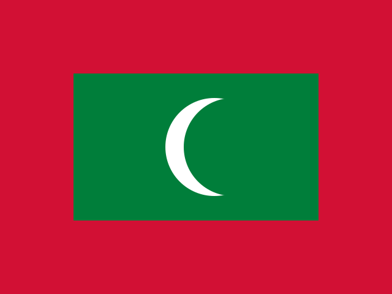

Countries › Seven seas (open ocean)
Mauritius
Where Mauritius stands out
 Saint Vincent and the Grenadines14,067
Saint Vincent and the Grenadines14,067 New Zealand8,489
New Zealand8,4896th of 176 · Food and Agriculture Organization (FAO), via World Bank, World Development Indicators (WDI), 2023
 Barbados657
Barbados657 Rwanda587
Rwanda5879th of 192 · World Bank, WDI, 2023
 Liechtenstein3.2%
Liechtenstein3.2% Trinidad and Tobago3.0%
Trinidad and Tobago3.0%13th of 194 · European Union Joint Research Centre (EU JRC) Global Human Settlement Layer, 2020

Maldives44.9% South Korea43.5%
South Korea43.5%16th of 175 · United Nations Department of Economic and Social Affairs (UN DESA) World Urbanization Prospects 2025 and World Bank (derived), 2025
Size, sea and borders
Land and height
People
Food, power and travel
Football and chess
See all 133 facts about Mauritius
Showing 20 highlights for Mauritius. Rank counts from the highest value among the countries that have data: 1st is the most. Ties share a rank. Data version 91, 22 November 2026.
Sort Mauritius against four others
The game has figures for Mauritius on 179 of its 190 questions.
The same game for Android and iOS. It launches on 10 December 2026.
Out now.